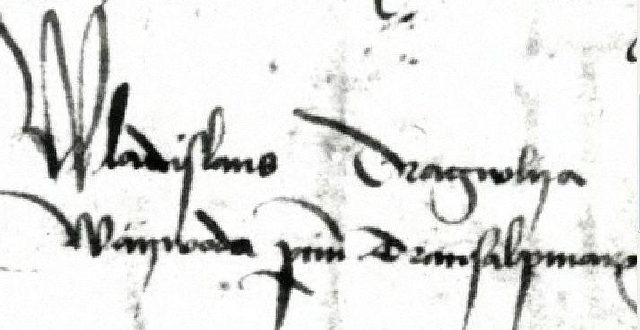

Влад III Цепеш
Влад III Басараб, также известный как Влад Дра́кула (рум. Vlad Dracula) и Влад Це́пеш
(рум. Vlad Țepeș) — господарь Валахии в 1448, 1456—1462 и 1476. Прототип заглавного персонажа в романе Брэма Стокера «Дракула»

Портрет 2-й половины XVI века кисти неизвестного художника
Прозвища
Прозвище «Дракул» (Дракула)
Исследователи сходятся в том, что прозвище «Дракул» (рум. Dracul, то есть «дьявол» или, по ассоциации, «дракон») было унаследовано Владом III от отца,
Влада II, который был рыцарем ордена Дракона, созданного в 1408 году королём Венгрии (а впоследствии императором Священной Римской империи) Сигизмундом I Люксембургом
и королевой Барбарой по образцу венгерского ордена Святого Георгия. Рыцари ордена носили медальоны и подвески с изображением свернувшегося в кольцо золотого дракона,
и Влад II при посвящении в рыцари в 1431 году также получил из рук короля медальон (орден) с драконом. Став господарем Валахии в 1436 году, Влад II поместил
изображение дракона на монеты, которые чеканил от своего имени и которыми принудительно заменял прежние деньги, а также на личную печать и свой геральдический щит,
что стало причиной появления прозвища, которое затем унаследовал Влад III.
Влад III в молодости, как и его отец, носил прозвище «Дракул», однако к 1470-м годам более распространённым стал вариант с буквой а на конце и сам Влад стал себя так называть.
Существует мнение, что Dracula в переводе с румынского языка означает «сын дракона», однако румынские историки отрицают, что a на конце могла придавать слову
дополнительное значение по сравнению со словом Dracul.
Исследователь Олег Талмазан указывает на то, что в средневековом русском переводе чешской рыцарской сказки «Повесть о Брунцвике» встречается словосочетание «дракъ змей»,
то есть дракон. Чешская сказка, приблизительно XIV века, в свою очередь является переработкой немецкого сюжета, а по-немецки дракон — der Drache.
Немцы тогда жили в городах Семиградья (Трансильвания) и немецкий язык был употребим в Венгерском королевстве, что позволяет принять версию происхождения прозвища от Ордена Дракона.
Следует также обратить внимание, что в латинском тексте послания Штефана Великого в Венецию о смерти Влада передаётся звук «х», как и в немецком языке — «draсhula». Таким образом,
можно предположить, что корень «драк» не валашского, а славянского или немецкого происхождения.
Прозвище «Цепеш»
Прозвище «Цепеш» происходит от рум. țeapă [ц'äпə], то есть «кол», и буквально означает «Колосажатель». Впервые оно встречается в валашских документах только через
30 лет после смерти Влада, 21 января 1506 года: «Влад воевода, которого именуют „Цепеш“». Это был перевод прозвища, полученного князем от турок и звучавшего как
Казыклы (тур. Kazıklı — от тур. kazık [казы́к] «кол»).
Господарь Валахии
ноябрь — декабрь 1476
- Предшественник
Басараб III Старый
- Преемник
Басараб III Старый
22 августа 1456 — 1462
- Предшественник
Владислав II
- Преемник
Раду III Красивый
октябрь — декабрь 1448
- Предшественник
Владислав II
- Преемник
Владислав II
- Рождение
не ранее 1428 и не позднее 1431 или декабрь 1431
Сигишоара, Королевство Венгрия
- Смерть
1476
Бухарест, Княжество Валахия
- Место погребения
Монастырь Снагов, возм. Монастырь Комана
- Род
Дракулешти
- Отец
Влад II Дракул
- Мать
Василика (молдавская княжна)
- Супруга
- Елизавета
- Илона Силадьи
- Дети
сыновья: Михаил, Влад, Михня Злой
- Отношение к религии
православие (Валашская митрополия)
- Автограф
